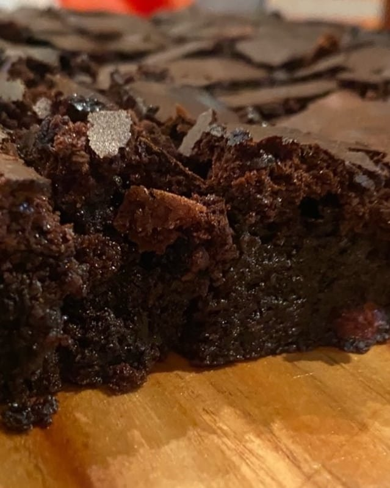

Ingredientes:
- 4 ovos
- 6 barras de chocolate Hersheys
- 250g de manteiga
- 200g de açúcar
- 100g de farinha de trigo
- 1 colher de chá de sal
- 1 colher grande de café expresso
Tempo de cozimento - 20 minutos a 180 graus
Modo de Preparo:
- Derreta a manteiga e reserve
- Enquanto derrete a manteiga, misture os 4 ovos e a açúcar e misture bem
- Acrescente a manteiga derretida no ovo e o açúcar
- Agora é so misturar o achocolatado, o café expresso e o trigo
- Unte uma forma com manteiga e achocolatado
- Leve ao forno a 180° C por 20 minutos
